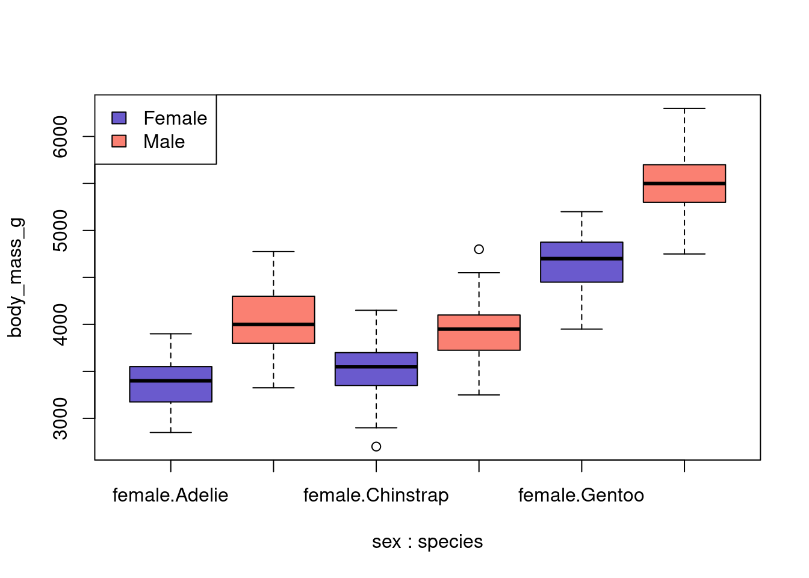

M1 <- matrix(1:16, nrow = 4, ncol = 4)Data structures – exercises
Day 1, B
Understanding basic data structures in R, including vectors, arrays, lists, and data frames
Learning objectives
In this lesson you will
- Practice working with vectors and matrices
- Thing about ways to organize data and output into data structures
- Compare and contrast the base R,
data.table, andtibblepackages for working with data.
Vectors and matrices
The following code creates a matrix with some integers:
- Take the sum of each row of
M1 - Create a new matrix called
M2that isM1with the diagonal elements replaced by 0s - Create a new matrix called
M3that isM1but with all values less than 4 replaced by -1 - Append the three matrices into an array with dimensions 4, 4, 3.
Organizing output from a statistical analysis
The Palmer penguins data are available in the package palmerpenguins. Install the package and inspect the data called palmerpenguins. You can read about the data in the help file:
library(palmerpenguins)
head(penguins)# A tibble: 6 × 8
species island bill_length_mm bill_depth_mm flipper_length_mm body_mass_g
<fct> <fct> <dbl> <dbl> <int> <int>
1 Adelie Torgersen 39.1 18.7 181 3750
2 Adelie Torgersen 39.5 17.4 186 3800
3 Adelie Torgersen 40.3 18 195 3250
4 Adelie Torgersen NA NA NA NA
5 Adelie Torgersen 36.7 19.3 193 3450
6 Adelie Torgersen 39.3 20.6 190 3650
# ℹ 2 more variables: sex <fct>, year <int>?palmerpenguins-packagestarting httpd help server ... doneLet’s do some basic analyses on this dataset.
by(penguins$body_mass_g, list(penguins$sex, penguins$species), summary): female
: Adelie
Min. 1st Qu. Median Mean 3rd Qu. Max.
2850 3175 3400 3369 3550 3900
------------------------------------------------------------
: male
: Adelie
Min. 1st Qu. Median Mean 3rd Qu. Max.
3325 3800 4000 4043 4300 4775
------------------------------------------------------------
: female
: Chinstrap
Min. 1st Qu. Median Mean 3rd Qu. Max.
2700 3362 3550 3527 3694 4150
------------------------------------------------------------
: male
: Chinstrap
Min. 1st Qu. Median Mean 3rd Qu. Max.
3250 3731 3950 3939 4100 4800
------------------------------------------------------------
: female
: Gentoo
Min. 1st Qu. Median Mean 3rd Qu. Max.
3950 4462 4700 4680 4875 5200
------------------------------------------------------------
: male
: Gentoo
Min. 1st Qu. Median Mean 3rd Qu. Max.
4750 5300 5500 5485 5700 6300 massfit <- lm(body_mass_g ~ sex * species, data = penguins)
summary(massfit)
Call:
lm(formula = body_mass_g ~ sex * species, data = penguins)
Residuals:
Min 1Q Median 3Q Max
-827.21 -213.97 11.03 206.51 861.03
Coefficients:
Estimate Std. Error t value Pr(>|t|)
(Intercept) 3368.84 36.21 93.030 < 2e-16 ***
sexmale 674.66 51.21 13.174 < 2e-16 ***
speciesChinstrap 158.37 64.24 2.465 0.01420 *
speciesGentoo 1310.91 54.42 24.088 < 2e-16 ***
sexmale:speciesChinstrap -262.89 90.85 -2.894 0.00406 **
sexmale:speciesGentoo 130.44 76.44 1.706 0.08886 .
---
Signif. codes: 0 '***' 0.001 '**' 0.01 '*' 0.05 '.' 0.1 ' ' 1
Residual standard error: 309.4 on 327 degrees of freedom
(11 observations deleted due to missingness)
Multiple R-squared: 0.8546, Adjusted R-squared: 0.8524
F-statistic: 384.3 on 5 and 327 DF, p-value: < 2.2e-16boxplot(body_mass_g ~ sex * species, data = penguins,
col = rep(c("slateblue", "salmon"), 3))
legend("topleft", fill = c("slateblue", "salmon"),
legend = c("Female", "Male"))
Inspect the massfit object. What type of data structure is it, and what does it contain?
You are planning a publication about the association/interaction between species and sex on body mass. The paper will include descriptive statistics, statistical inference, and some figures. You will likely present the results at a conference or in a lab meeting.
- What are some different approaches to save the results?
- Discuss the pros and cons of your suggested approaches.
Stop and think
How do you plan to use the statistical output, immediately and in the future? Thinking about this question helps guide what and how I will store output from an analysis.
- Will I read the data into another program before putting it into tables for my paper?
- Is it a result of a computation that takes a long time to run that will be used in subsequent analyses?
- What about figures?
Working with data using different structures
The penguins data is stored as a tibble, which is a special type of data structure that is an enhanced data frame. That is, a tibble is still a data.frame, but it is also more than that.
library(tibble)Warning: package 'tibble' was built under R version 4.2.3class(penguins) [1] "tbl_df" "tbl" "data.frame"is.data.frame(penguins)[1] TRUEis_tibble(penguins)[1] TRUETry it yourself
There are other packages out there that enhance data frames. In this exercise we will introduce and compare base data frames, data.tables, and tibbles. For these you will need the tibble, dplyr, and data.table packages.
If you have used any of these before, try one of the others. Read the help files and try out some other functions.
Code
options(max.print = 48)
peng_df <- as.data.frame(penguins)
class(peng_df)[1] "data.frame"## subset
subset(peng_df, !is.na(body_mass_g)) species island bill_length_mm bill_depth_mm flipper_length_mm body_mass_g
1 Adelie Torgersen 39.1 18.7 181 3750
2 Adelie Torgersen 39.5 17.4 186 3800
3 Adelie Torgersen 40.3 18.0 195 3250
5 Adelie Torgersen 36.7 19.3 193 3450
6 Adelie Torgersen 39.3 20.6 190 3650
7 Adelie Torgersen 38.9 17.8 181 3625
sex year
1 male 2007
2 female 2007
3 female 2007
5 female 2007
6 male 2007
7 female 2007
[ reached 'max' / getOption("max.print") -- omitted 336 rows ]subset(peng_df, sex == "male") species island bill_length_mm bill_depth_mm flipper_length_mm body_mass_g
1 Adelie Torgersen 39.1 18.7 181 3750
6 Adelie Torgersen 39.3 20.6 190 3650
8 Adelie Torgersen 39.2 19.6 195 4675
14 Adelie Torgersen 38.6 21.2 191 3800
15 Adelie Torgersen 34.6 21.1 198 4400
18 Adelie Torgersen 42.5 20.7 197 4500
sex year
1 male 2007
6 male 2007
8 male 2007
14 male 2007
15 male 2007
18 male 2007
[ reached 'max' / getOption("max.print") -- omitted 162 rows ]peng_df[1:6, ] species island bill_length_mm bill_depth_mm flipper_length_mm body_mass_g
1 Adelie Torgersen 39.1 18.7 181 3750
2 Adelie Torgersen 39.5 17.4 186 3800
3 Adelie Torgersen 40.3 18.0 195 3250
4 Adelie Torgersen NA NA NA NA
5 Adelie Torgersen 36.7 19.3 193 3450
6 Adelie Torgersen 39.3 20.6 190 3650
sex year
1 male 2007
2 female 2007
3 female 2007
4 <NA> 2007
5 female 2007
6 male 2007## sort
peng_df[order(peng_df$year), ] species island bill_length_mm bill_depth_mm flipper_length_mm body_mass_g
1 Adelie Torgersen 39.1 18.7 181 3750
2 Adelie Torgersen 39.5 17.4 186 3800
3 Adelie Torgersen 40.3 18.0 195 3250
4 Adelie Torgersen NA NA NA NA
5 Adelie Torgersen 36.7 19.3 193 3450
6 Adelie Torgersen 39.3 20.6 190 3650
sex year
1 male 2007
2 female 2007
3 female 2007
4 <NA> 2007
5 female 2007
6 male 2007
[ reached 'max' / getOption("max.print") -- omitted 338 rows ]peng_df[order(peng_df$year, decreasing = TRUE), ] species island bill_length_mm bill_depth_mm flipper_length_mm body_mass_g
101 Adelie Biscoe 35.0 17.9 192 3725
102 Adelie Biscoe 41.0 20.0 203 4725
103 Adelie Biscoe 37.7 16.0 183 3075
104 Adelie Biscoe 37.8 20.0 190 4250
105 Adelie Biscoe 37.9 18.6 193 2925
106 Adelie Biscoe 39.7 18.9 184 3550
sex year
101 female 2009
102 male 2009
103 female 2009
104 male 2009
105 female 2009
106 male 2009
[ reached 'max' / getOption("max.print") -- omitted 338 rows ]## select columns
peng_df[c("species", "sex", "year")] species sex year
1 Adelie male 2007
2 Adelie female 2007
3 Adelie female 2007
4 Adelie <NA> 2007
5 Adelie female 2007
6 Adelie male 2007
7 Adelie female 2007
8 Adelie male 2007
9 Adelie <NA> 2007
10 Adelie <NA> 2007
11 Adelie <NA> 2007
12 Adelie <NA> 2007
13 Adelie female 2007
14 Adelie male 2007
15 Adelie male 2007
16 Adelie female 2007
[ reached 'max' / getOption("max.print") -- omitted 328 rows ]peng_df[grep("^bill", names(peng_df), value = TRUE)] bill_length_mm bill_depth_mm
1 39.1 18.7
2 39.5 17.4
3 40.3 18.0
4 NA NA
5 36.7 19.3
6 39.3 20.6
7 38.9 17.8
8 39.2 19.6
9 34.1 18.1
10 42.0 20.2
11 37.8 17.1
12 37.8 17.3
13 41.1 17.6
14 38.6 21.2
15 34.6 21.1
16 36.6 17.8
17 38.7 19.0
18 42.5 20.7
19 34.4 18.4
20 46.0 21.5
21 37.8 18.3
22 37.7 18.7
23 35.9 19.2
24 38.2 18.1
[ reached 'max' / getOption("max.print") -- omitted 320 rows ]subset(peng_df, select = bill_length_mm:body_mass_g) bill_length_mm bill_depth_mm flipper_length_mm body_mass_g
1 39.1 18.7 181 3750
2 39.5 17.4 186 3800
3 40.3 18.0 195 3250
4 NA NA NA NA
5 36.7 19.3 193 3450
6 39.3 20.6 190 3650
7 38.9 17.8 181 3625
8 39.2 19.6 195 4675
9 34.1 18.1 193 3475
10 42.0 20.2 190 4250
11 37.8 17.1 186 3300
12 37.8 17.3 180 3700
[ reached 'max' / getOption("max.print") -- omitted 332 rows ]## create new columns
peng_df$bill_ratio <- with(peng_df, bill_length_mm / bill_depth_mm)
# or
peng_df <- within(peng_df, {
bill_ratio <- bill_length_mm / bill_depth_mm
})
#or
peng_df <- transform(peng_df, bill_ratio = bill_length_mm / bill_depth_mm)
# reorder
peng_df[c("species", "island", "bill_length_mm",
"bill_depth_mm", "bill_ratio", "flipper_length_mm",
"body_mass_g", "sex", "year")] species island bill_length_mm bill_depth_mm bill_ratio flipper_length_mm
1 Adelie Torgersen 39.1 18.7 2.090909 181
2 Adelie Torgersen 39.5 17.4 2.270115 186
3 Adelie Torgersen 40.3 18.0 2.238889 195
4 Adelie Torgersen NA NA NA NA
5 Adelie Torgersen 36.7 19.3 1.901554 193
body_mass_g sex year
1 3750 male 2007
2 3800 female 2007
3 3250 female 2007
4 NA <NA> 2007
5 3450 female 2007
[ reached 'max' / getOption("max.print") -- omitted 339 rows ]Tibble is often paired with dplyr, which is another package for data manipulation.
library(dplyr)Warning: package 'dplyr' was built under R version 4.2.3
Attaching package: 'dplyr'The following objects are masked from 'package:stats':
filter, lagThe following objects are masked from 'package:base':
intersect, setdiff, setequal, union## subset
filter(penguins, !is.na(body_mass_g))# A tibble: 342 × 8
species island bill_length_mm bill_depth_mm flipper_length_mm body_mass_g
<fct> <fct> <dbl> <dbl> <int> <int>
1 Adelie Torgersen 39.1 18.7 181 3750
2 Adelie Torgersen 39.5 17.4 186 3800
3 Adelie Torgersen 40.3 18 195 3250
4 Adelie Torgersen 36.7 19.3 193 3450
5 Adelie Torgersen 39.3 20.6 190 3650
6 Adelie Torgersen 38.9 17.8 181 3625
7 Adelie Torgersen 39.2 19.6 195 4675
8 Adelie Torgersen 34.1 18.1 193 3475
9 Adelie Torgersen 42 20.2 190 4250
10 Adelie Torgersen 37.8 17.1 186 3300
# ℹ 332 more rows
# ℹ 2 more variables: sex <fct>, year <int>filter(penguins, sex == "male")# A tibble: 168 × 8
species island bill_length_mm bill_depth_mm flipper_length_mm body_mass_g
<fct> <fct> <dbl> <dbl> <int> <int>
1 Adelie Torgersen 39.1 18.7 181 3750
2 Adelie Torgersen 39.3 20.6 190 3650
3 Adelie Torgersen 39.2 19.6 195 4675
4 Adelie Torgersen 38.6 21.2 191 3800
5 Adelie Torgersen 34.6 21.1 198 4400
6 Adelie Torgersen 42.5 20.7 197 4500
7 Adelie Torgersen 46 21.5 194 4200
8 Adelie Biscoe 37.7 18.7 180 3600
9 Adelie Biscoe 38.2 18.1 185 3950
10 Adelie Biscoe 38.8 17.2 180 3800
# ℹ 158 more rows
# ℹ 2 more variables: sex <fct>, year <int>slice(penguins, 1:6)# A tibble: 6 × 8
species island bill_length_mm bill_depth_mm flipper_length_mm body_mass_g
<fct> <fct> <dbl> <dbl> <int> <int>
1 Adelie Torgersen 39.1 18.7 181 3750
2 Adelie Torgersen 39.5 17.4 186 3800
3 Adelie Torgersen 40.3 18 195 3250
4 Adelie Torgersen NA NA NA NA
5 Adelie Torgersen 36.7 19.3 193 3450
6 Adelie Torgersen 39.3 20.6 190 3650
# ℹ 2 more variables: sex <fct>, year <int>## sort
arrange(penguins, year)# A tibble: 344 × 8
species island bill_length_mm bill_depth_mm flipper_length_mm body_mass_g
<fct> <fct> <dbl> <dbl> <int> <int>
1 Adelie Torgersen 39.1 18.7 181 3750
2 Adelie Torgersen 39.5 17.4 186 3800
3 Adelie Torgersen 40.3 18 195 3250
4 Adelie Torgersen NA NA NA NA
5 Adelie Torgersen 36.7 19.3 193 3450
6 Adelie Torgersen 39.3 20.6 190 3650
7 Adelie Torgersen 38.9 17.8 181 3625
8 Adelie Torgersen 39.2 19.6 195 4675
9 Adelie Torgersen 34.1 18.1 193 3475
10 Adelie Torgersen 42 20.2 190 4250
# ℹ 334 more rows
# ℹ 2 more variables: sex <fct>, year <int>arrange(penguins, desc(year))# A tibble: 344 × 8
species island bill_length_mm bill_depth_mm flipper_length_mm body_mass_g
<fct> <fct> <dbl> <dbl> <int> <int>
1 Adelie Biscoe 35 17.9 192 3725
2 Adelie Biscoe 41 20 203 4725
3 Adelie Biscoe 37.7 16 183 3075
4 Adelie Biscoe 37.8 20 190 4250
5 Adelie Biscoe 37.9 18.6 193 2925
6 Adelie Biscoe 39.7 18.9 184 3550
7 Adelie Biscoe 38.6 17.2 199 3750
8 Adelie Biscoe 38.2 20 190 3900
9 Adelie Biscoe 38.1 17 181 3175
10 Adelie Biscoe 43.2 19 197 4775
# ℹ 334 more rows
# ℹ 2 more variables: sex <fct>, year <int>## select columns
select(penguins, species, sex, year)# A tibble: 344 × 3
species sex year
<fct> <fct> <int>
1 Adelie male 2007
2 Adelie female 2007
3 Adelie female 2007
4 Adelie <NA> 2007
5 Adelie female 2007
6 Adelie male 2007
7 Adelie female 2007
8 Adelie male 2007
9 Adelie <NA> 2007
10 Adelie <NA> 2007
# ℹ 334 more rowsselect(penguins, starts_with("bill"))# A tibble: 344 × 2
bill_length_mm bill_depth_mm
<dbl> <dbl>
1 39.1 18.7
2 39.5 17.4
3 40.3 18
4 NA NA
5 36.7 19.3
6 39.3 20.6
7 38.9 17.8
8 39.2 19.6
9 34.1 18.1
10 42 20.2
# ℹ 334 more rowsselect(penguins, bill_length_mm:body_mass_g)# A tibble: 344 × 4
bill_length_mm bill_depth_mm flipper_length_mm body_mass_g
<dbl> <dbl> <int> <int>
1 39.1 18.7 181 3750
2 39.5 17.4 186 3800
3 40.3 18 195 3250
4 NA NA NA NA
5 36.7 19.3 193 3450
6 39.3 20.6 190 3650
7 38.9 17.8 181 3625
8 39.2 19.6 195 4675
9 34.1 18.1 193 3475
10 42 20.2 190 4250
# ℹ 334 more rows## create new columns
mutate(penguins, bill_ratio = bill_length_mm / bill_depth_mm) |>
select(starts_with("bill"))# A tibble: 344 × 3
bill_length_mm bill_depth_mm bill_ratio
<dbl> <dbl> <dbl>
1 39.1 18.7 2.09
2 39.5 17.4 2.27
3 40.3 18 2.24
4 NA NA NA
5 36.7 19.3 1.90
6 39.3 20.6 1.91
7 38.9 17.8 2.19
8 39.2 19.6 2
9 34.1 18.1 1.88
10 42 20.2 2.08
# ℹ 334 more rowsmutate(penguins, bill_ratio = bill_length_mm / bill_depth_mm) |>
relocate(bill_ratio, .after = bill_depth_mm)# A tibble: 344 × 9
species island bill_length_mm bill_depth_mm bill_ratio flipper_length_mm
<fct> <fct> <dbl> <dbl> <dbl> <int>
1 Adelie Torgersen 39.1 18.7 2.09 181
2 Adelie Torgersen 39.5 17.4 2.27 186
3 Adelie Torgersen 40.3 18 2.24 195
4 Adelie Torgersen NA NA NA NA
5 Adelie Torgersen 36.7 19.3 1.90 193
6 Adelie Torgersen 39.3 20.6 1.91 190
7 Adelie Torgersen 38.9 17.8 2.19 181
8 Adelie Torgersen 39.2 19.6 2 195
9 Adelie Torgersen 34.1 18.1 1.88 193
10 Adelie Torgersen 42 20.2 2.08 190
# ℹ 334 more rows
# ℹ 3 more variables: body_mass_g <int>, sex <fct>, year <int>library(data.table)
Attaching package: 'data.table'The following objects are masked from 'package:dplyr':
between, first, lastpeng_dt <- data.table(penguins)
## subset
peng_dt[!is.na(body_mass_g)] species island bill_length_mm bill_depth_mm flipper_length_mm
1: Adelie Torgersen 39.1 18.7 181
2: Adelie Torgersen 39.5 17.4 186
3: Adelie Torgersen 40.3 18.0 195
4: Adelie Torgersen 36.7 19.3 193
5: Adelie Torgersen 39.3 20.6 190
---
body_mass_g sex year
1: 3750 male 2007
2: 3800 female 2007
3: 3250 female 2007
4: 3450 female 2007
5: 3650 male 2007
---
[ reached getOption("max.print") -- omitted 5 rows ]peng_dt[sex == "male"] species island bill_length_mm bill_depth_mm flipper_length_mm
1: Adelie Torgersen 39.1 18.7 181
2: Adelie Torgersen 39.3 20.6 190
3: Adelie Torgersen 39.2 19.6 195
4: Adelie Torgersen 38.6 21.2 191
5: Adelie Torgersen 34.6 21.1 198
---
body_mass_g sex year
1: 3750 male 2007
2: 3650 male 2007
3: 4675 male 2007
4: 3800 male 2007
5: 4400 male 2007
---
[ reached getOption("max.print") -- omitted 5 rows ]peng_dt[1:6] species island bill_length_mm bill_depth_mm flipper_length_mm body_mass_g
1: Adelie Torgersen 39.1 18.7 181 3750
2: Adelie Torgersen 39.5 17.4 186 3800
3: Adelie Torgersen 40.3 18.0 195 3250
4: Adelie Torgersen NA NA NA NA
5: Adelie Torgersen 36.7 19.3 193 3450
6: Adelie Torgersen 39.3 20.6 190 3650
sex year
1: male 2007
2: female 2007
3: female 2007
4: <NA> 2007
5: female 2007
6: male 2007## sort
setorder(peng_dt, year) # doesn't return anything but modifies the table
peng_dt species island bill_length_mm bill_depth_mm flipper_length_mm
1: Adelie Torgersen 39.1 18.7 181
2: Adelie Torgersen 39.5 17.4 186
3: Adelie Torgersen 40.3 18.0 195
4: Adelie Torgersen NA NA NA
5: Adelie Torgersen 36.7 19.3 193
---
body_mass_g sex year
1: 3750 male 2007
2: 3800 female 2007
3: 3250 female 2007
4: NA <NA> 2007
5: 3450 female 2007
---
[ reached getOption("max.print") -- omitted 5 rows ]setorder(peng_dt, -year)
peng_dt species island bill_length_mm bill_depth_mm flipper_length_mm
1: Adelie Biscoe 35.0 17.9 192
2: Adelie Biscoe 41.0 20.0 203
3: Adelie Biscoe 37.7 16.0 183
4: Adelie Biscoe 37.8 20.0 190
5: Adelie Biscoe 37.9 18.6 193
---
body_mass_g sex year
1: 3725 female 2009
2: 4725 male 2009
3: 3075 female 2009
4: 4250 male 2009
5: 2925 female 2009
---
[ reached getOption("max.print") -- omitted 5 rows ]## select columns
peng_dt[, .(species, sex, year)] species sex year
1: Adelie female 2009
2: Adelie male 2009
3: Adelie female 2009
4: Adelie male 2009
5: Adelie female 2009
---
340: Chinstrap male 2007
341: Chinstrap female 2007
342: Chinstrap male 2007
343: Chinstrap female 2007
344: Chinstrap male 2007peng_dt[, grep("^bill", names(peng_dt)), with = FALSE] bill_length_mm bill_depth_mm
1: 35.0 17.9
2: 41.0 20.0
3: 37.7 16.0
4: 37.8 20.0
5: 37.9 18.6
---
340: 48.5 17.5
341: 43.2 16.6
342: 50.6 19.4
343: 46.7 17.9
344: 52.0 19.0peng_dt[, bill_length_mm:body_mass_g] bill_length_mm bill_depth_mm flipper_length_mm body_mass_g
1: 35.0 17.9 192 3725
2: 41.0 20.0 203 4725
3: 37.7 16.0 183 3075
4: 37.8 20.0 190 4250
5: 37.9 18.6 193 2925
---
340: 48.5 17.5 191 3400
341: 43.2 16.6 187 2900
342: 50.6 19.4 193 3800
343: 46.7 17.9 195 3300
344: 52.0 19.0 197 4150## create new columns
peng_dt[, bill_ratio := bill_length_mm / bill_depth_mm]
peng_dt species island bill_length_mm bill_depth_mm flipper_length_mm
1: Adelie Biscoe 35.0 17.9 192
2: Adelie Biscoe 41.0 20.0 203
3: Adelie Biscoe 37.7 16.0 183
4: Adelie Biscoe 37.8 20.0 190
5: Adelie Biscoe 37.9 18.6 193
body_mass_g sex year bill_ratio
1: 3725 female 2009 1.955307
2: 4725 male 2009 2.050000
3: 3075 female 2009 2.356250
4: 4250 male 2009 1.890000
5: 2925 female 2009 2.037634
[ reached getOption("max.print") -- omitted 6 rows ]# transform but doesn't modify the dt
peng_dt[, .(bill_ratio = bill_length_mm / bill_depth_mm)] bill_ratio
1: 1.955307
2: 2.050000
3: 2.356250
4: 1.890000
5: 2.037634
---
340: 2.771429
341: 2.602410
342: 2.608247
343: 2.608939
344: 2.736842# returns a vector
peng_dt[, (bill_ratio = bill_length_mm / bill_depth_mm)] [1] 1.955307 2.050000 2.356250 1.890000 2.037634 2.100529 2.244186 1.910000
[9] 2.241176 2.273684 2.309091 2.246305 2.242938 2.164103 1.913043 2.333333
[17] 2.270588 1.819512 2.100000 2.209677 2.104651 1.904040 2.364706 2.237838
[25] 2.213836 2.136842 2.204545 2.267760 2.280702 2.450000 2.150838 2.244792
[33] 1.989189 2.027027 2.164773 2.348571 2.034286 2.000000 2.242424 2.217877
[41] 2.350877 2.360465 2.070968 2.394118 2.220238 2.085561 2.107527 1.989130
[ reached getOption("max.print") -- omitted 296 entries ]# reorder columns
setcolorder(peng_dt, c("species", "island", "bill_length_mm",
"bill_depth_mm", "bill_ratio"))
peng_dt species island bill_length_mm bill_depth_mm bill_ratio flipper_length_mm
1: Adelie Biscoe 35.0 17.9 1.955307 192
2: Adelie Biscoe 41.0 20.0 2.050000 203
3: Adelie Biscoe 37.7 16.0 2.356250 183
4: Adelie Biscoe 37.8 20.0 1.890000 190
5: Adelie Biscoe 37.9 18.6 2.037634 193
body_mass_g sex year
1: 3725 female 2009
2: 4725 male 2009
3: 3075 female 2009
4: 4250 male 2009
5: 2925 female 2009
[ reached getOption("max.print") -- omitted 6 rows ]Notes
In the above we used the function grep("^bill", names(penguins)). The first string is called a ‘regular expression’, and in this case "^bill" can be translated to “starts with bill”. This defines a pattern that is checked against the names(penguins) which contains species, island, bill_length_mm, bill_depth_mm, flipper_length_mm, body_mass_g, sex, year. Which column names match the pattern?
Regular expressions are very flexible in terms of how you can define patterns. We will use them again in more depth when we talk about working with character data.